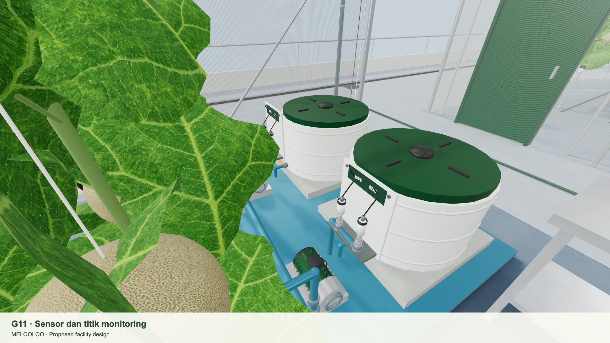

Explore the whole
greenhouse.
Walk the proposed rooftop facility, inspect its rooms and sensors, and trace every design decision back to the visual guidelines.
A TOUR IN NINE STOPS
Walk through the idea.
Follow this order for a first presentation, or jump directly to any page in the library.
- 01See the whole site in 3DFly over the mall, enter the campus, then visit each greenhouse and support room.INTERACTIVE MODEL
- 02Check the mall alignmentCompare the proposed parallel greenhouse footprint with mapped mall and street geometry.SITE PLAN
- 03Understand every roomReview the 41-section spatial program, adjacencies and infrastructure questions.GUIDELINE
- 04Inspect the design atlasBrowse realistic room images, Blender geometry and dimensioned plans by section ID.VISUAL ATLAS
- 05Explore sensors and controlSee how sensing, fertigation, ventilation and alerting fit into the proposed facility.TECHNOLOGY
- 06Meet the productConnect the growing operation to its melon line, packaging and visual language.PRODUCT
- 07Present the facilityUse captured simulator views as a room-by-room presentation companion.PRESENTATION
- 08Scroll through the business storyExplore market, model, operations, people and finance through a continuous visual narrative.WEB STORY
- 09Present the full slide deckOpen all 66 redesigned HTML slides, supporting source material and interactive 3D walkthrough.FINAL DECK

JUMP INTO THE MODEL
Start at a place that matters.
The 3D site has direct room links. Use these to take your audience from the roof context to the grow aisle and operational technology.
COMPLETE PAGE INDEX
Find every resource.
These are the current project pages. The original reference landing and realism studies remain available for context.
No matching pages. Try “sensor”, “room”, or “product”.
READ THE MODEL CORRECTLY
Mapped context.
Proposed greenhouse.
The Mall Artha Gading boundary and nearby streets were aligned to public map data. The greenhouse location on the roof, its footprint fit, room placement, structural loads and utilities are design proposals. A roof survey and engineering review are required before treating the layout as buildable.
Review site alignment